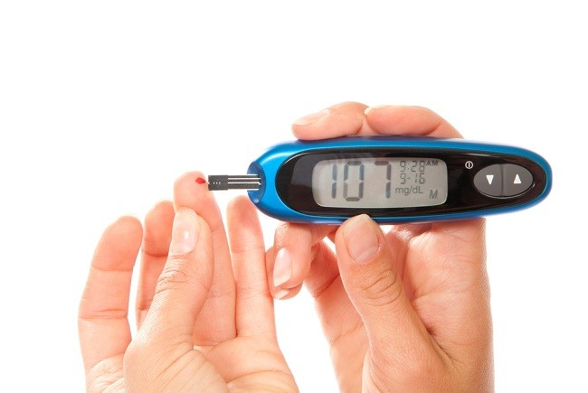

5 Cara Mengendalikan Gula Darah untuk Hidup Lebih Sehat
Ditulis oleh dr. Gracia Fensynthia | 4 September 2024

Cara mengendalikan gula darah agar tetap normal perlu dilakukan,
terutama bagi penderita diabetes. Hal ini untuk mencegah
komplikasi akibat kadar gula darah tinggi, seperti penyakit
jantung, gangguan penglihatan, hingga kerusakan ginjal.
Cara mengendalikan gula darah akan bergantung pada kondisi setiap
orang. Bagi yang tidak berisiko diabetes, cara ini bisa dilakukan
dengan pola hidup sehat. Namun, penderita diabetes atau yang
rentan terhadapnya, seperti penderita obesitas, tekanan darah
tinggi, atau sindrom metabolik, perlu diimbangi dengan
obat-obatan.
Berikut beberapa cara mengendalikan gula darah yang dapat
diterapkan:
1. Menjalani pola makan sehat dan bergizi seimbang
Konsumsi makanan tinggi serat, seperti buah-buahan, sayuran, dan
biji-bijian utuh, dapat menurunkan gula darah dan menjaganya tetap
stabil. Rekomendasi asupan serat per hari adalah 25 gram untuk
wanita dan 38 gram untuk pria. Batasi asupan gula maksimal 24 gram
per hari.
2. Berolahraga secara rutin
Olahraga membantu insulin membawa gula darah ke otot sebagai
sumber energi, sehingga gula darah menurun. Olahraga selama 30
menit per hari atau 150 menit per minggu dianjurkan. Konsultasikan
dengan dokter jika memiliki kondisi medis.
3. Mengurangi stres
Stres dapat meningkatkan kadar gula darah karena hormon kortisol.
Kelola stres dengan kegiatan yang menyenangkan, seperti membaca,
mendengarkan musik, atau teknik relaksasi, serta tidur yang cukup
(7-9 jam per hari).
4. Berhenti merokok dan batasi konsumsi alkohol
Merokok dan konsumsi alkohol berlebihan dapat meningkatkan gula
darah dan risiko komplikasi diabetes. Hentikan kebiasaan ini untuk
menjaga kesehatan. Jika sulit, konsultasikan ke dokter.
5. Mengonsumsi obat-obatan
Jika cara-cara alami tidak berhasil menurunkan gula darah,
penderita diabetes mungkin memerlukan obat antidiabetes sesuai
resep dokter, seperti metformin, glibenclamide, atau suntikan
insulin jika diperlukan.
Selain menerapkan cara di atas, penting untuk melakukan pengecekan
gula darah secara rutin, terutama jika memiliki riwayat diabetes.
Konsultasikan ke dokter jika mengalami gejala gula darah tinggi,
seperti sering haus, lapar, atau sering buang air kecil.